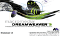
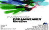

|
생각하는것은 할수있다 ?!?
얼마
전부터 듣기 시작하여 가장 좋아하게된 문구가 되었다.
상당히 짧은 문구이지만 그 내포하는 바가 아주 마음에 들었다. 일을 하던 무엇을하던간에 생각해낸것을 이루기위해 노력하는 과정... 난 이런한것을 좋아한다. 결과란 과정을 보여주기위한 아주좋은 보기인거같다.
본 홈페이지를 제작하면서
과연 이것을 만들어야 할까 라는 생각을 많이 해왔다. 이 홈페이지도 몇일후면 업데이트도없고 방문자도, 심지어 운영자 역시 접속하지않는 그러한 인터넷상의 쓰레기가 되지 않을까...라고.... 이미 몇번의 홈페이지를 만들어보면서 나름대로의 KnowHow 가 샇였다고 할수있겠다. 잘된경우...잘못된경우... 본 홈페이지의 서비스내용으로는 역시 나에게도 방문자에게도 도움이 될수있는 Tutorial을 선택했다. 하나하나 업데이트로하여금 정보를 교류할수있고 나역시 그만큼 습득및 제확인을 할수있는 계기가 될것이다. 

Main Contents는 내가 가장 좋아하는 툴중 하나인 Dreamweaver다.
처음 접할땐는 왠지 어색한감이 많았지만 기능하나하나 알아가면서 사이트를 구축해보면 그 매력이 더욱더 높아져만갔다. 한때는 같은회사인 Macromedia의 Flash에 눈이 갔었으나... 역시 웹사이트는 정적인 레이아웃에서 오는 느낌이 좋다. 드림위버가 좋다!
그동안 해왔던일.....
별로 생각을 해본적이 없었던것 같다. 과거의 일들이 그리 중요하다는 생각을 아직도 느끼지 못하고있다 아니 앞으로도 별 필요성을 갖지 못할것이다. 과거 현재 그리고 미래.... 가장 비중있어야 할것은 현재가 아닐까 한다. 궂이 점수를 매기자면 과거에는 5%정도 현재에 80%정도 그리고 나머지 15%를 미래에... 음..역시 과거 제작한 프로젝트들이 확연히 떠올르지 않네...-_-a
마지막으로 본 홈페이지를 올릴수있는 계정공간을 마련해준
coco.Netizen 에 감사를 드린다. |